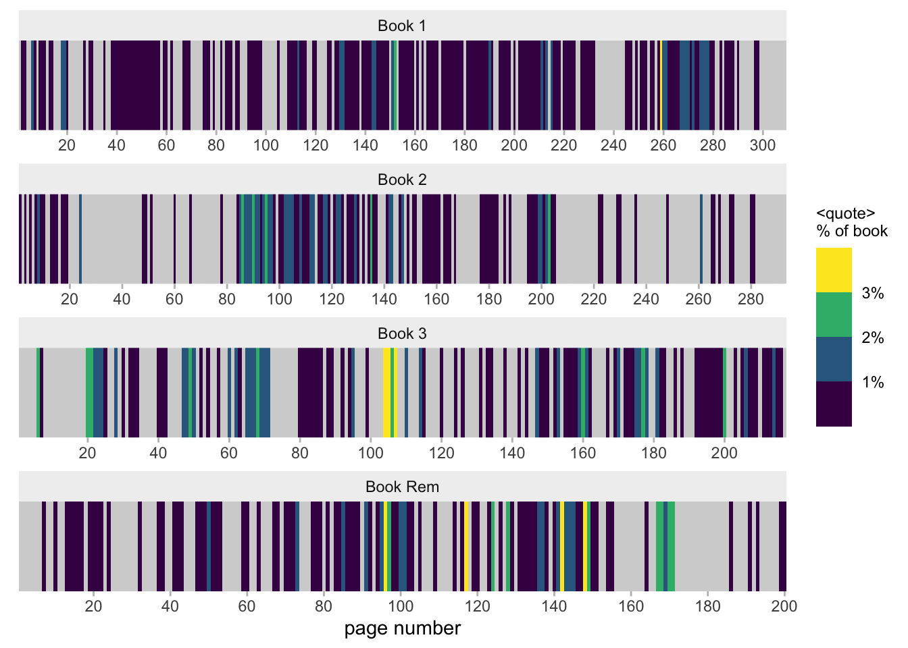
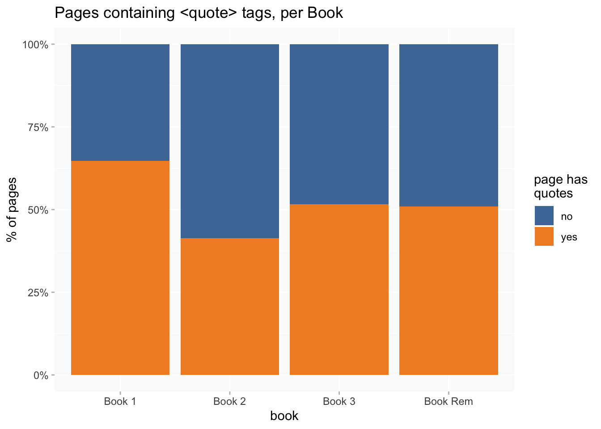
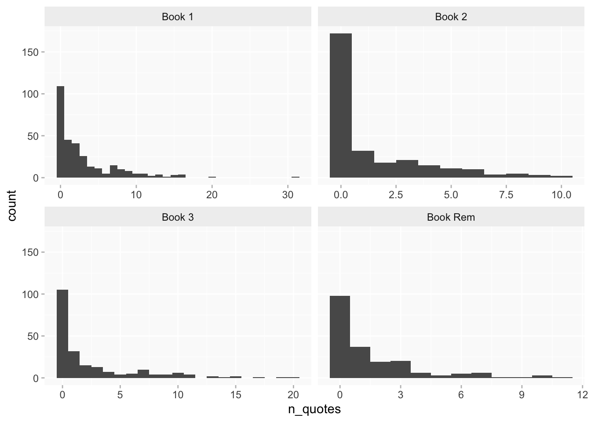
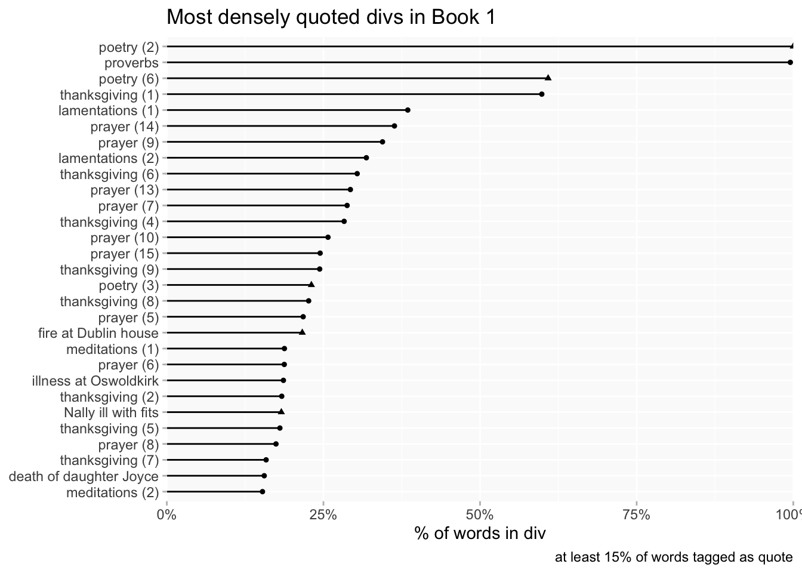
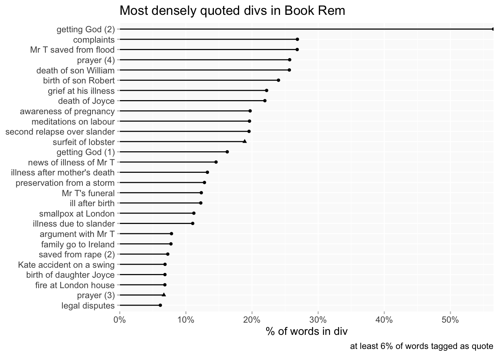
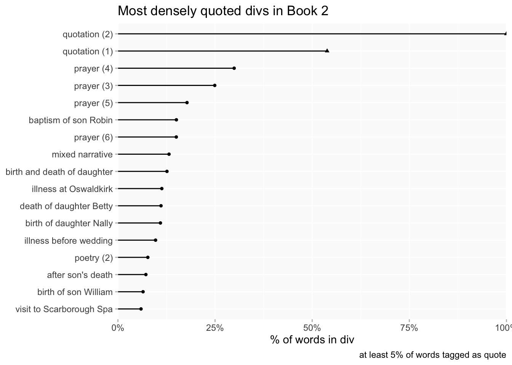
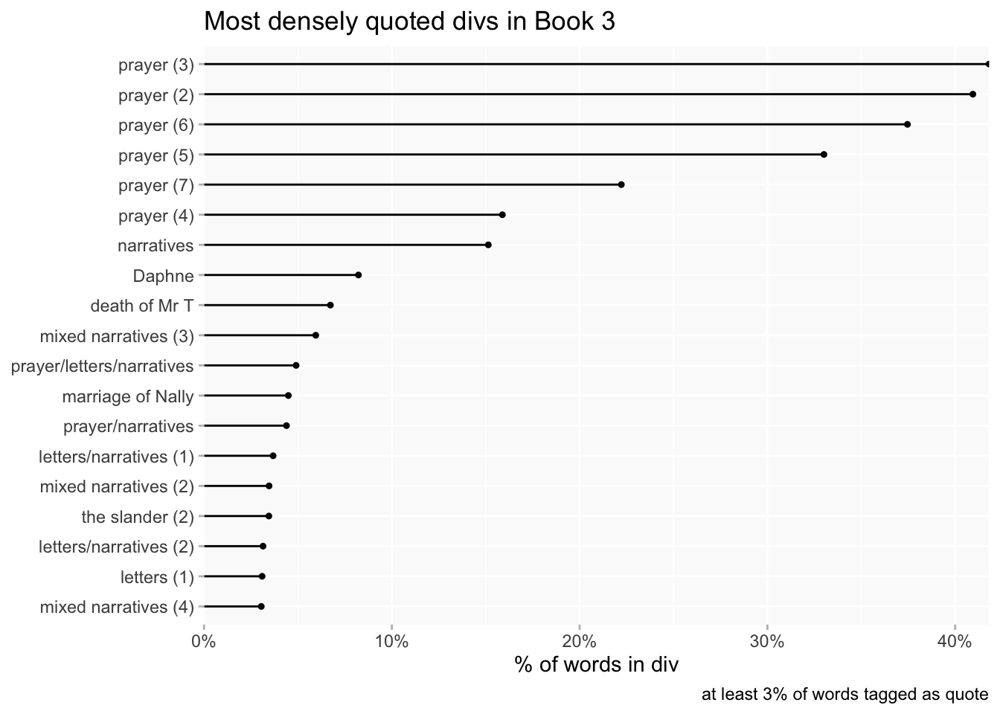

Biblical references in context
Pages
I’m using pages as a starting point for convenience (though they’re not particularly meaningful, they are evenly sized). This chart is a kind of hybrid of a “barcode chart” (each page of each book is represented by one narrow bar, reading left to right from the first page), and a heatmap.
Since the Books vary in terms of size and numbers of quotes, I’m using density (quotes per page as a percentage of a Book’s total, rather than counts). A bar is light grey when a page has no quotes at all. On pages that do have quotes, density of quotation is encoded with colour, from very dark blue = lowest density to bright yellow=highest density.
A table with page links to the DSE is provided below to help look up any points of interest.
Book 1 has the most even spread of quotes, with relatively few and narrow blocks of grey, a lot of big chunks of dark bars but almost no light colours.
Book 2 has the highest concentration of pages without quotes; where it does have quotes they cluster a bit more than in Book 1 (more greens) though there are again very few yellows. Much of the quotation is focused in the second quarter of the Book.
In contrast, both Book 3 and Book Rem have quite a few visible yellow bars, suggesting more clustering of quotes. In Book 3 that’s noticeably concentrated in a single area near the middle of the Book and along with the clustering, quotes seem more scattered than in the other Books. (NB that much of the large grey area near the end of Book Rem is the Index; the rest is probably the chunks of poetry just before the Index. I think - but will need to check - that the grey block around 240 in Book 1 is the same section of poetry.)
Book 1 has a lot more quotes than any of the other books. The difference between 1 and Rem, given their similarities in narrative, is striking. (If I’d done this analysis earlier it would have been something nice to add to my chapter…)
| book | pages | quotes | max | median | mean |
|---|---|---|---|---|---|
| Book 1 | 309 | 954 | 31 | 2 | 3.087379 |
| Book 2 | 293 | 421 | 10 | 0 | 1.436860 |
| Book 3 | 217 | 547 | 20 | 1 | 2.520737 |
| Book Rem | 200 | 304 | 11 | 1 | 1.520000 |
The proportion of pages without any quotes, as hinted by the barcode chart, also varies considerably between Books. In Book 1 about 35% of pages have no quotes at all; in Book 2 it’s about 59%.

Meanwhile, a histogram highlights a) that the spread for Book 1 is slightly exaggerated by a couple of outliers, and b) the reason why the table above gives a median of 0 for Book 2; the predominance of zero-quote pages really stands out.

Table
Divs
The Books’ <div> tagging can be used give some more meaningful insights, but because divs in the Books vary a lot in length, they’re trickier to use. I’m using word counts and calculating quote word count as a percentage of div word count. But very short divs can be a bit problematic with that kind of method, so divs of less than 100 words are highlighted (triangles instead of round lollipops).
The short labels I’m using (especially for Book 3) are rough and ready work in progress but hopefully give enough info to make sense: there’s another table below to help locate them. (Numbers in brackets are used to make repeated labels unique.)
It’s no great surprise that quotes tend to be most concentrated in divs that are explicitly labelled as prayers, meditations, etc. So what gets more interesting is when other divs make it into the top 30 or so. In the case of Book 1 the first of these is a very short div; the first substantial div is AT’s traumatic illness at Oswaldkirk (I need to fix the spelling in the label) in ?1661.

Divs devoted to prayer and meditation form a much smaller proportion of Book Rem, so they’re accordingly less common here. But densities are quite low even in the top ranked divs. I think “illness after mother’s death” may be the same as illness at Oswaldkirk in Book 1!

I think this is less effective for Book 2 and especially Book 3 because the divs tend to be long and contain more mixed material than 1/Rem. It’s difficult to give some divs meaningful labels. This is likely to need some more thought.


Table
Columns are filterable and sortable. Click on ▶ to open up details with links to DSE.